To control how different plots are laid out, you need to add a layout specification. If you are nesting grids, the layout is scoped to the current nesting level.
Usage
plot_layout(
ncol = NULL,
nrow = NULL,
byrow = NULL,
widths = NULL,
heights = NULL,
guides = NULL,
tag_level = NULL,
design = NULL,
axes = NULL,
axis_titles = axes
)Arguments
- ncol, nrow
The dimensions of the grid to create - if both are
NULLit will use the same logic as facet_wrap() to set the dimensions- byrow
Analogous to
byrowin matrix(). IfFALSEthe plots will be filled in in column-major order- widths, heights
The relative widths and heights of each column and row in the grid. Will get repeated to match the dimensions of the grid. The special value of
NA/-1nullwill behave as1nullunless a fixed aspect plot is inserted in which case it will allow the dimension to expand or contract to match the aspect ratio of the content- guides
A string specifying how guides should be treated in the layout.
'collect'will collect guides below to the given nesting level, removing duplicates.'keep'will stop collection at this level and let guides be placed alongside their plot.autowill allow guides to be collected if a upper level tries, but place them alongside the plot if not. If you modify default guide "position" with theme(legend.position=...) while also collecting guides you must apply that change to the overall patchwork (see example).- tag_level
A string (
'keep'or'new') to indicate how auto-tagging should behave. Seeplot_annotation().- design
Specification of the location of areas in the layout. Can either be specified as a text string or by concatenating calls to
area()together. See the examples for further information on use.- axes
A string specifying how axes should be treated.
'keep'will retain all axes in individual plots.'collect'will remove duplicated axes when placed in the same run of rows or columns of the layout.'collect_x'and'collect_y'will remove duplicated x-axes in the columns or duplicated y-axes in the rows respectively.- axis_titles
A string specifying how axis titltes should be treated.
'keep'will retain all axis titles in individual plots.'collect'will remove duplicated titles in one direction and merge titles in the opposite direction.'collect_x'and'collect_y'control this for x-axis titles and y-axis titles respectively.
Examples
library(ggplot2)
p1 <- ggplot(mtcars) + geom_point(aes(mpg, disp))
p2 <- ggplot(mtcars) + geom_boxplot(aes(gear, disp, group = gear))
p3 <- ggplot(mtcars) + geom_bar(aes(gear)) + facet_wrap(~cyl)
p4 <- ggplot(mtcars) + geom_bar(aes(carb))
p5 <- ggplot(mtcars) + geom_violin(aes(cyl, mpg, group = cyl))
# The plots are layed out automatically by default
p1 + p2 + p3 + p4 + p5
 # Use byrow to change how the grid is filled out
p1 + p2 + p3 + p4 + p5 + plot_layout(byrow = FALSE)
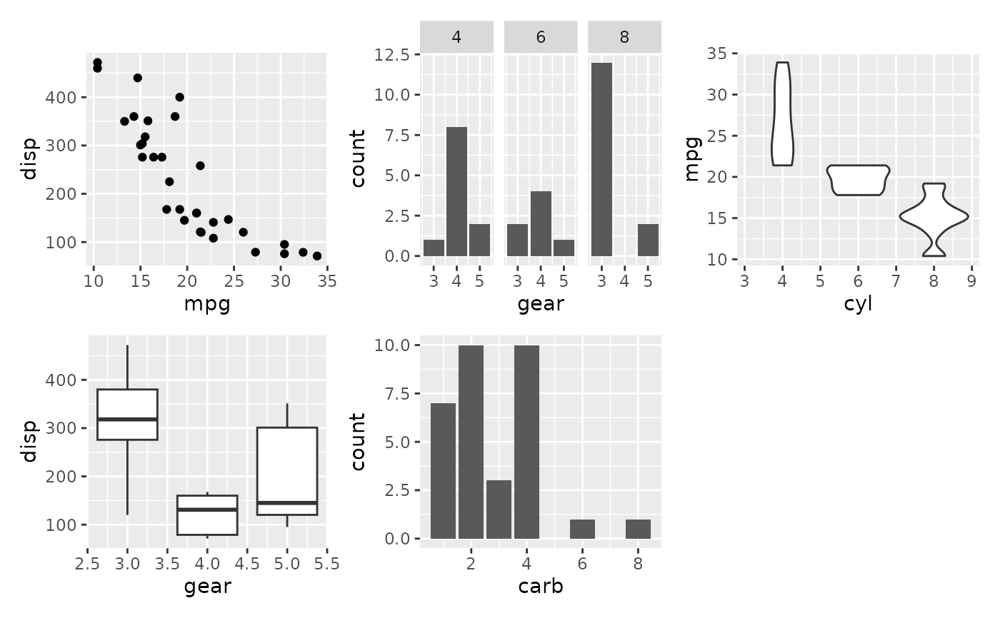
# Change the grid dimensions
p1 + p2 + p3 + p4 + p5 + plot_layout(ncol = 2, widths = c(1, 2))
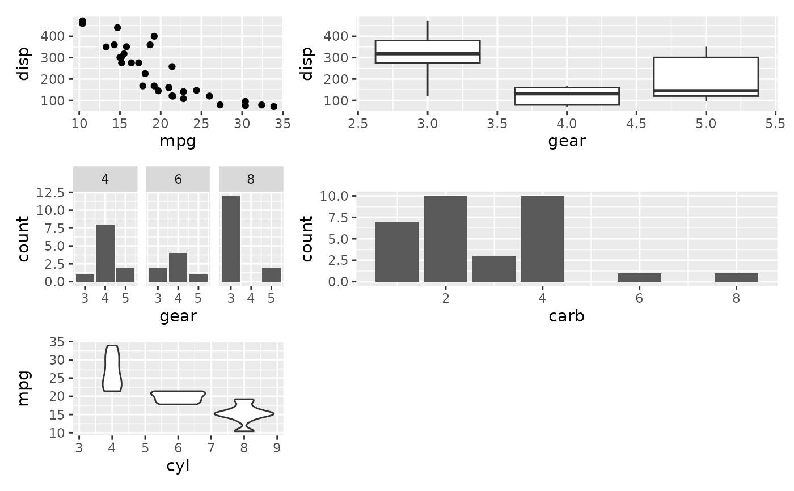
# Define layout at different nesting levels
p1 +
p2 +
(p3 +
p4 +
plot_layout(ncol = 1)
) +
p5 +
plot_layout(widths = c(2, 1))
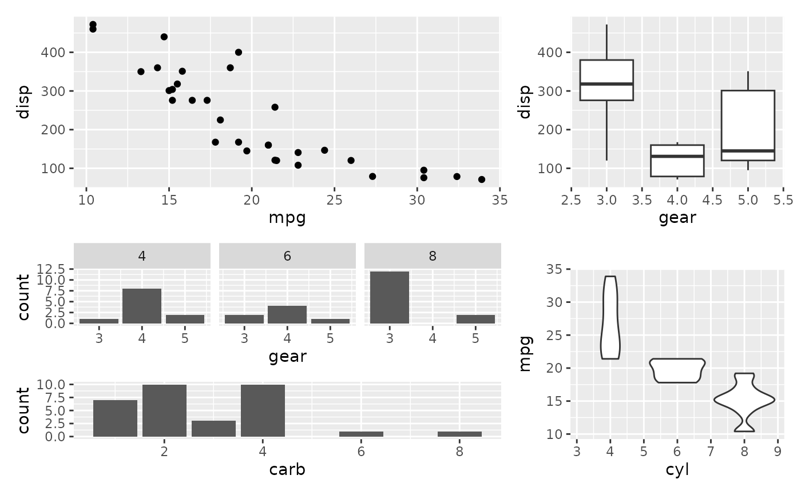
# Complex layouts can be created with the `design` argument
design <- c(
area(1, 1, 2),
area(1, 2, 1, 3),
area(2, 3, 3),
area(3, 1, 3, 2),
area(2, 2)
)
p1 + p2 + p3 + p4 + p5 + plot_layout(design = design)
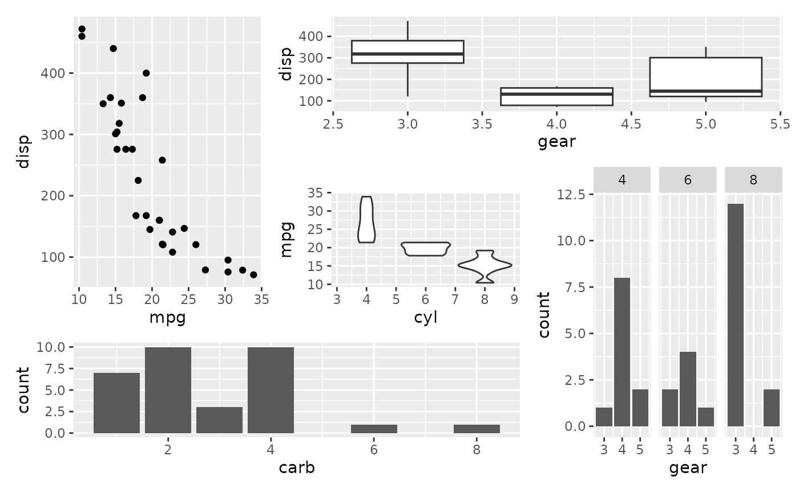
# \donttest{
# The same can be specified as a character string:
design <- "
122
153
443
"
p1 + p2 + p3 + p4 + p5 + plot_layout(design = design)
# Use byrow to change how the grid is filled out
p1 + p2 + p3 + p4 + p5 + plot_layout(byrow = FALSE)
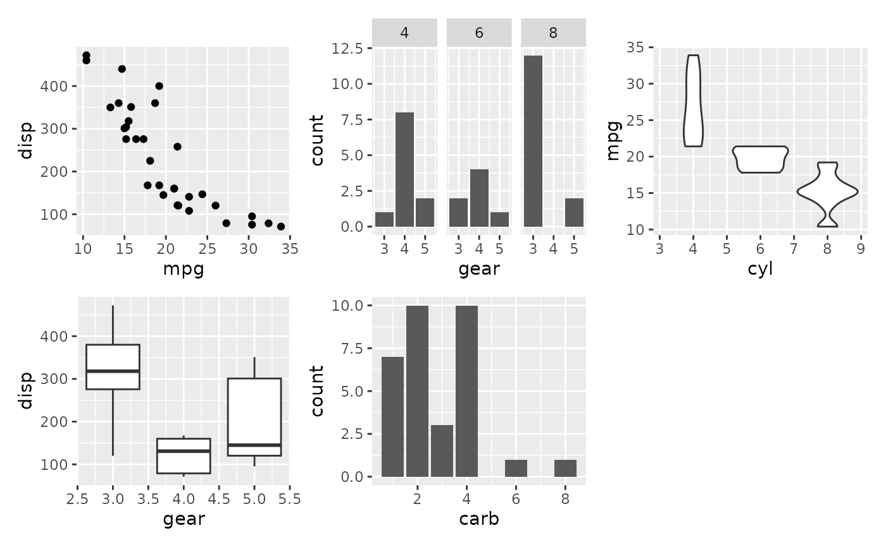
# Change the grid dimensions
p1 + p2 + p3 + p4 + p5 + plot_layout(ncol = 2, widths = c(1, 2))
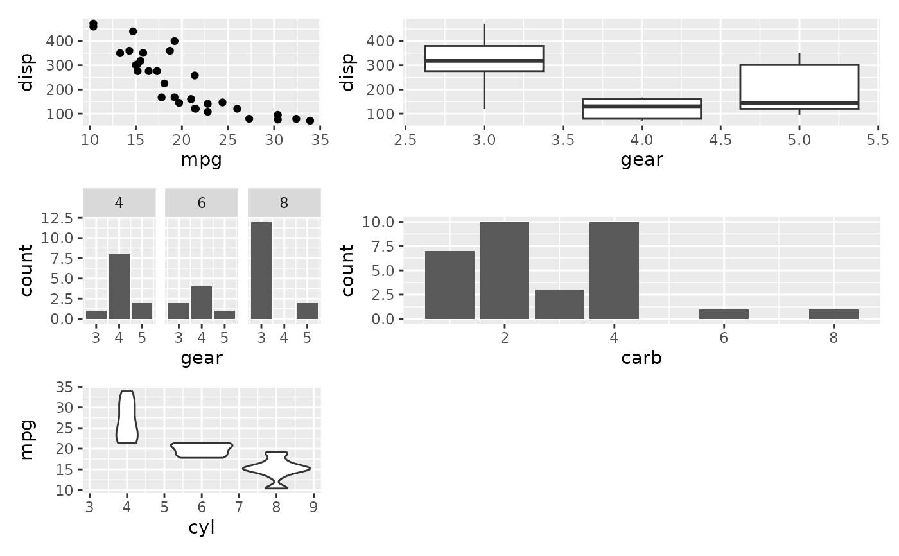
# Define layout at different nesting levels
p1 +
p2 +
(p3 +
p4 +
plot_layout(ncol = 1)
) +
p5 +
plot_layout(widths = c(2, 1))
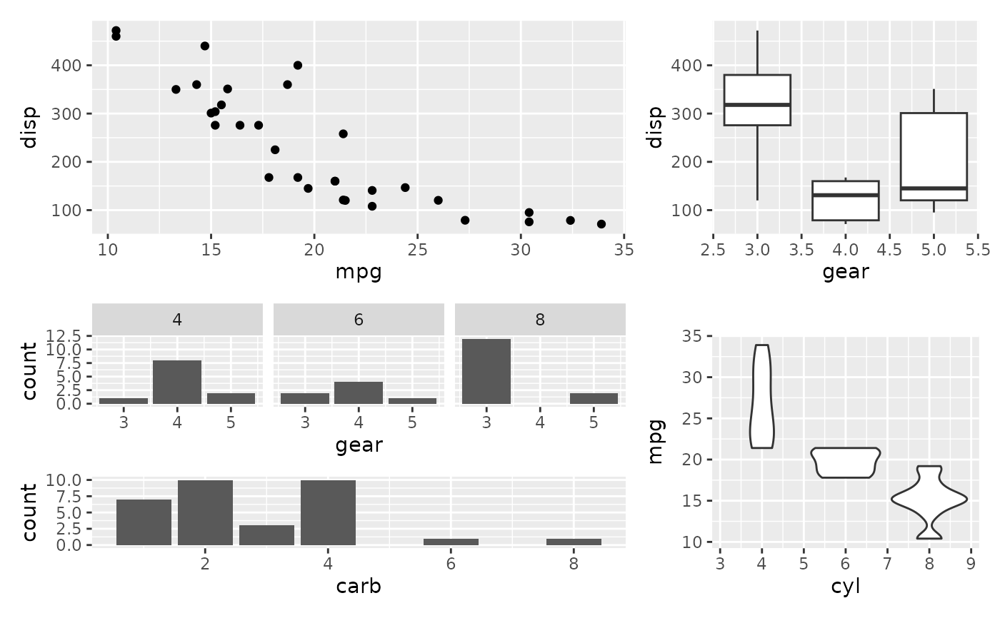
# Complex layouts can be created with the `design` argument
design <- c(
area(1, 1, 2),
area(1, 2, 1, 3),
area(2, 3, 3),
area(3, 1, 3, 2),
area(2, 2)
)
p1 + p2 + p3 + p4 + p5 + plot_layout(design = design)
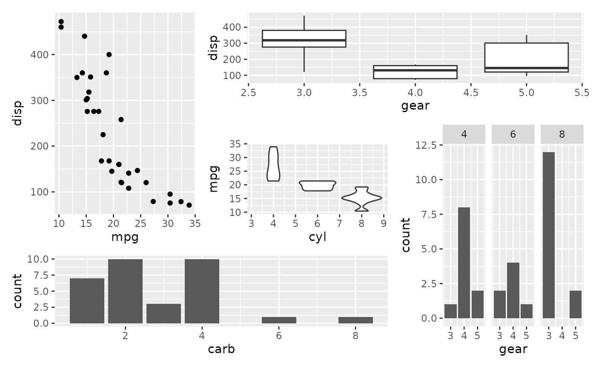
# \donttest{
# The same can be specified as a character string:
design <- "
122
153
443
"
p1 + p2 + p3 + p4 + p5 + plot_layout(design = design)
 # When using strings to define the design `#` can be used to denote empty
# areas
design <- "
1##
123
##3
"
p1 + p2 + p3 + plot_layout(design = design)
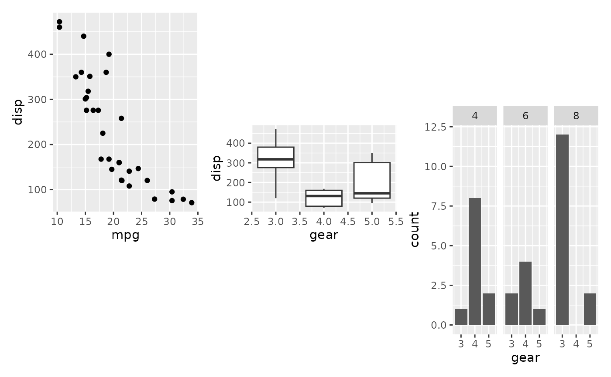
# }
# Use guides="collect" to remove duplicate guides
p6 <- ggplot(mtcars) + geom_point(aes(mpg, disp, color=cyl))
p7 <- ggplot(mtcars) + geom_point(aes(mpg, hp, color=cyl))
p6 + p7 + plot_layout(guides='collect')
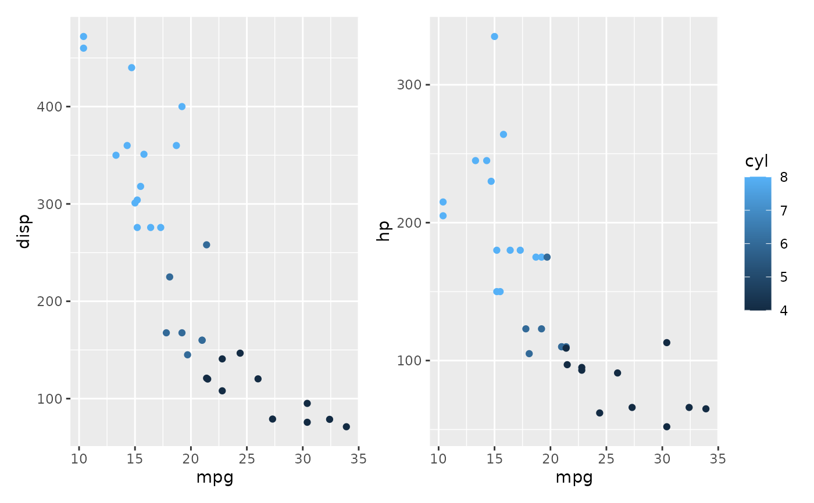
# Guide position must be applied to entire patchwork
p6 + p7 + plot_layout(guides='collect') &
theme(legend.position='bottom')
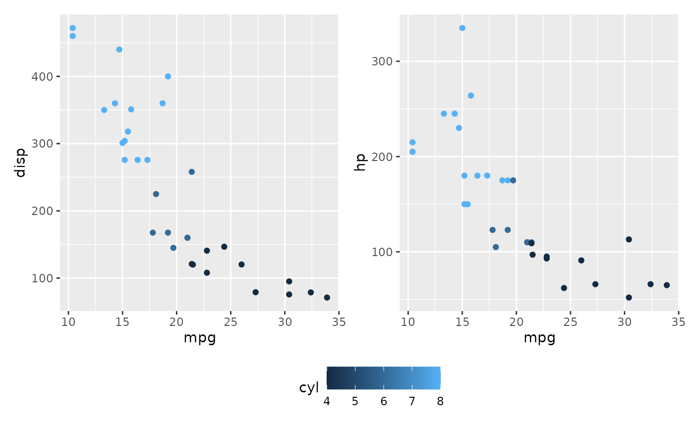
# When using strings to define the design `#` can be used to denote empty
# areas
design <- "
1##
123
##3
"
p1 + p2 + p3 + plot_layout(design = design)
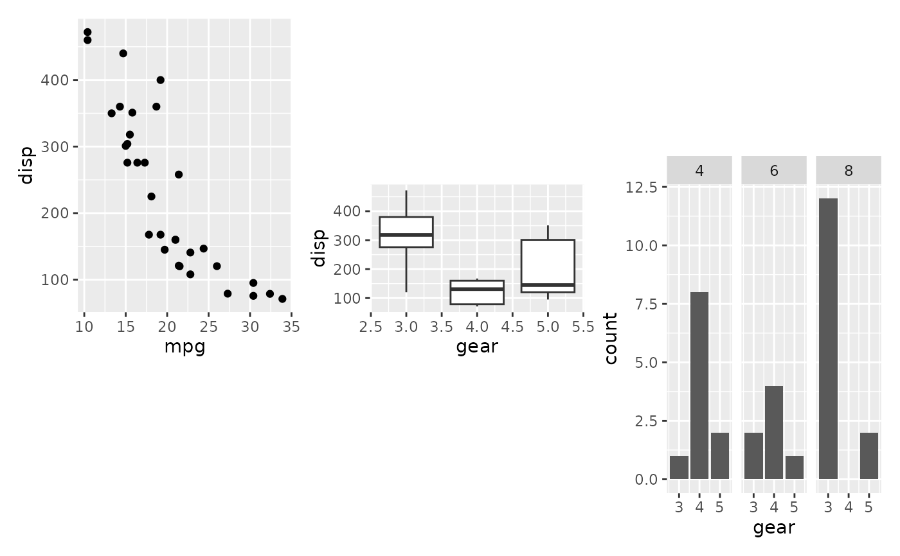
# }
# Use guides="collect" to remove duplicate guides
p6 <- ggplot(mtcars) + geom_point(aes(mpg, disp, color=cyl))
p7 <- ggplot(mtcars) + geom_point(aes(mpg, hp, color=cyl))
p6 + p7 + plot_layout(guides='collect')
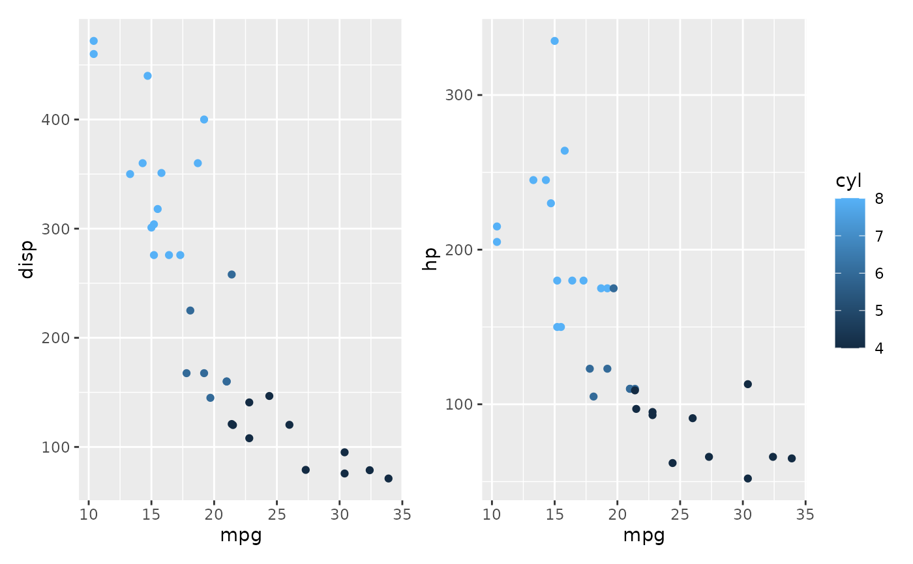
# Guide position must be applied to entire patchwork
p6 + p7 + plot_layout(guides='collect') &
theme(legend.position='bottom')
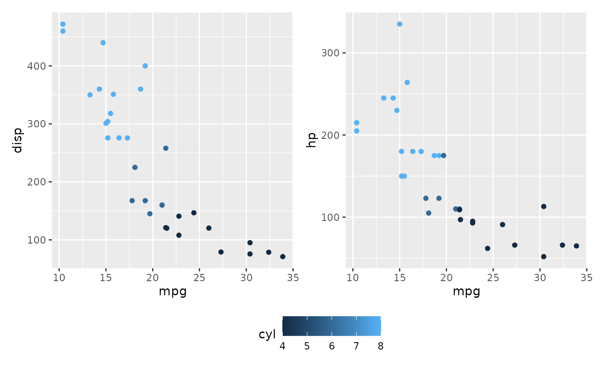